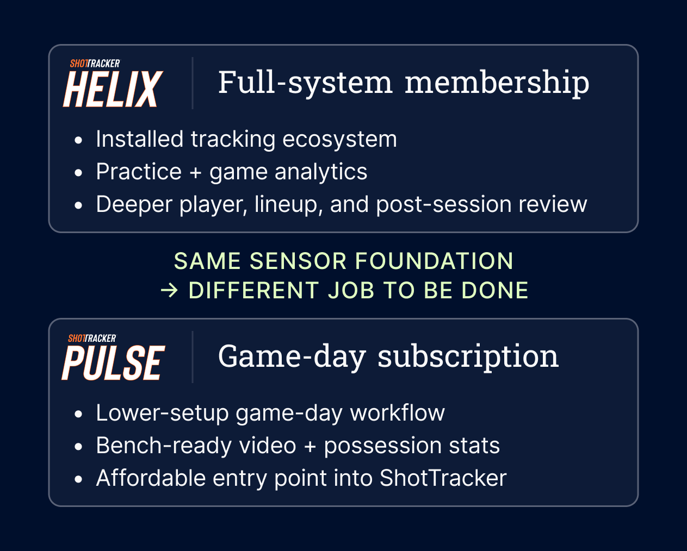
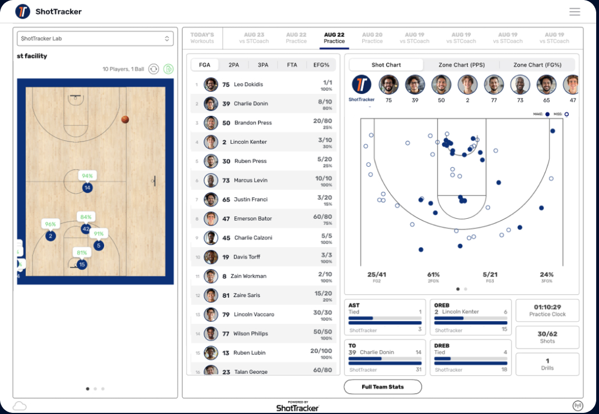
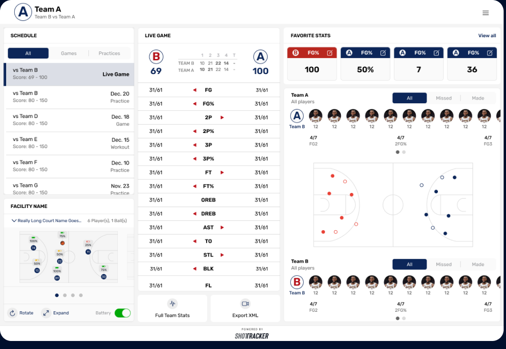
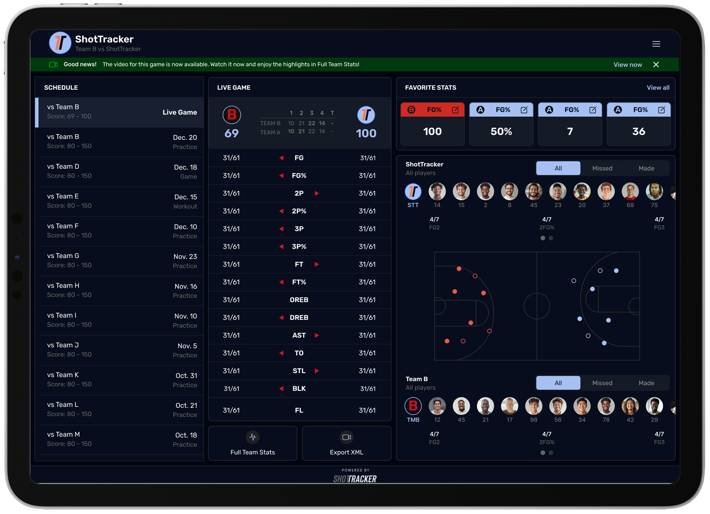
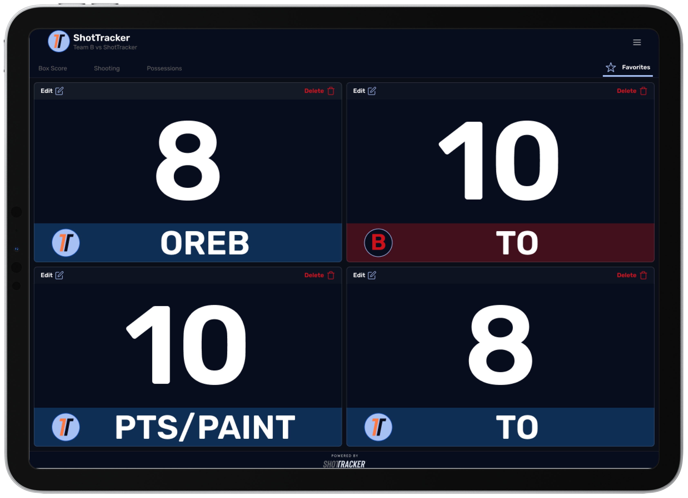
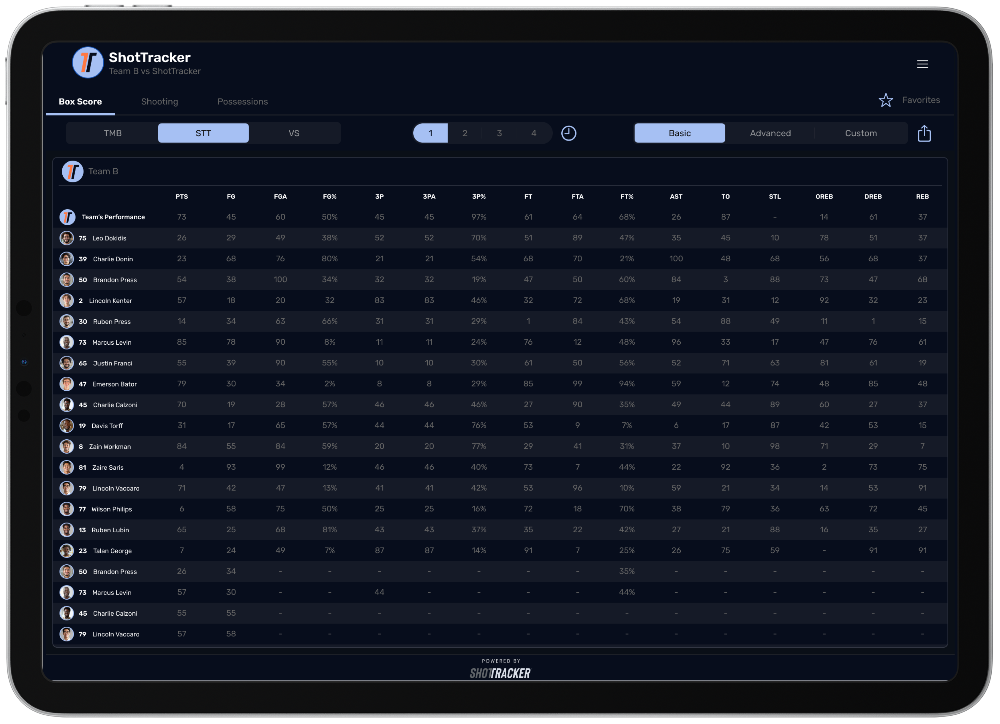

01
Tracks the ball and players
Chips inside basketballs and player wearables capture movement throughout the game.
An iPad product that gives NCAA basketball coaches live video and stats during games, with less setup than Helix, ShotTracker’s complete court-installed system.
How ShotTracker Works
01
Chips inside basketballs and player wearables capture movement throughout the game.
02
Sensors and cameras around the court record shots, possessions, and player movement.
03
Coaches receive live video and stats they can use during games. NCAA men’s and women’s programs use the technology, including teams competing in the Big 12 and March Madness.
Design Challenge
01
Smaller programs needed a way to benefit from ShotTracker without committing to the cost and setup of the full Helix system. Pulse had to feel complete and valuable on its own.
02
Coaches needed to find video and important stats quickly while sitting on the bench, without navigating a complex analytics tool during play.
03
Some apps still used DD Sports naming and older store imagery. Customers needed one clear ShotTracker brand across every product they encountered.
Key Product Decisions

Decision 01
Pulse was designed as an easier and more affordable way to use ShotTracker on game day. I focused the experience on the video and stats coaches need most, so it felt like a purposeful product rather than a limited version of Helix.


Decision 02
I also proposed updates to Helix, the full ShotTracker system. Games and practices became easier to find, simple filters helped coaches move between activities, and the large court view no longer dominated the screen. I used the same patterns in Pulse so coaches moving between products would not have to learn everything again.

Decision 03
I created Favorite Stats so coaches could choose which numbers stayed large and visible during a game. The idea began in Helix and was adapted for Pulse, giving both products a useful feature built around real coaching needs.

See shots, possessions, and player movement as the game happens.
Review game video alongside the stats that explain each play.

Keep the most important numbers visible so coaches can guide players during the game.

Review an organized summary of team and player performance during or after the game.
Key Decisions
Pulse needed to be useful for programs that were not ready for the full Helix system. I focused on making video and stats easy to use on the bench, bringing every app under the ShotTracker brand, and using familiar navigation across both products. Favorite Stats gave coaches a simple way to keep their most important information in view during a game.
This was not a complete redesign of the ShotTracker system. I worked within the existing product and focused on changes that made Pulse clearer, easier to use, and recognizably part of the same family as Helix.
Reflection
Pulse reminded me that a product does not need every possible feature to be valuable. Coaches needed quick access to useful video and stats during a game, and the design needed to stay focused on that moment.
The strongest part of the work was making Pulse easy for new programs to understand while keeping it familiar to existing ShotTracker users. Clear naming, consistent navigation, and a focused set of features helped connect the two experiences.
Outcomes
NCAA men’s and women’s programs now use ShotTracker, including Big 12, Purdue, Indiana, and BYU.
Used by more than 50 college basketball programs.
Pulse helped unlock expansion beyond D1, making it available to D2 and D3 programs for the first time.
I’m happy to walk through the full design process and decisions behind the product.
Contact me